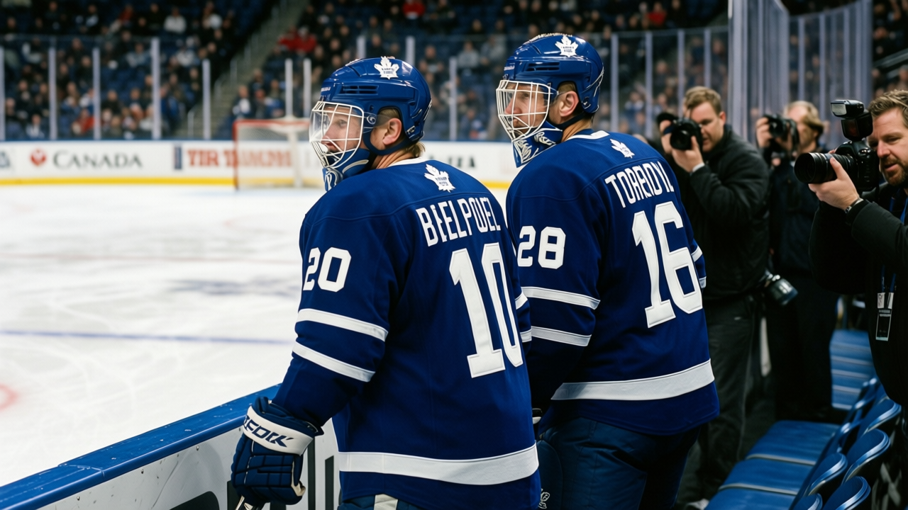

TOR
TOR NYR
NYRLEAFS 7, PHI 1: Sundin and Tellqvist back for the Rangers; McCabe a day later
The Rangers bring 44 points without Bure, Carter or Poti, and the only open question is the crease
 Sam OkaforLeafs beat reporter · Queen City Telegram
Sam OkaforLeafs beat reporter · Queen City Telegram
The Leafs ran the streak to 14 with a 7-1 win in Philadelphia on Sunday, and the lineup that faces the Rangers at the Air Canada Centre tomorrow night is a fuller one.  Mats Sundin88, is carrying the league's hot-streak marker, which the desk had previously misread as an injury; he is available. Mikael Tellqvist75 is back tomorrow as well.
Mats Sundin88, is carrying the league's hot-streak marker, which the desk had previously misread as an injury; he is available. Mikael Tellqvist75 is back tomorrow as well.  Bryan McCabe83 is set for the day after, in time for the trip to Atlanta on 12-16.
Bryan McCabe83 is set for the day after, in time for the trip to Atlanta on 12-16.
Sundin rejoins the league's most productive attack with 40 points in 29 games, 17 of them goals, at 17.2 minutes a night. The Leafs have scored at least 7 in each of their last 3 games and stand at 175 goals for, 80 against.  Brad Richards86 told The Tunnel's Jan Kowalczyk after the Devils game that Sundin "takes the hard matchups, he's out there on both ends, and he doesn't get loud about it. That's the stuff nobody sees and everybody rides on."
Brad Richards86 told The Tunnel's Jan Kowalczyk after the Devils game that Sundin "takes the hard matchups, he's out there on both ends, and he doesn't get loud about it. That's the stuff nobody sees and everybody rides on."
The Rangers are the closest the East has to a rival on the board. They hold first in the Atlantic at 44 points on a 2-game win streak, the only club within 4 of the Leafs' 48. They arrive thin:  Pavel Bure87 (ankle, set for 2005-01-06),
Pavel Bure87 (ankle, set for 2005-01-06),  Anson Carter88 (knee, 12-26) and
Anson Carter88 (knee, 12-26) and  Tom Poti85 (rib, 12-17) are all out.
Tom Poti85 (rib, 12-17) are all out.

The crease resolves in part tomorrow.  David Aebischer86, carried 11 straight starts before the club rested him, and no date is on the board for his return. Tellqvist is back from three below his Book base at 52.0 minutes a night, and
David Aebischer86, carried 11 straight starts before the club rested him, and no date is on the board for his return. Tellqvist is back from three below his Book base at 52.0 minutes a night, and  Ed Belfour93, 39, holds 10 starts at 56.0 minutes. The three-goalie rotation is the one open question on a club with none.
Ed Belfour93, 39, holds 10 starts at 56.0 minutes. The three-goalie rotation is the one open question on a club with none.
After tomorrow comes a road swing through the Southeast: Atlanta on 12-16, Florida 12-18, Tampa Bay 12-19, then St. Louis at home on 12-21. McCabe's 40 points in 29 games from the back line, at 23.2 minutes, return to the group for it.
---
Correction. An earlier edition of this piece read the league's roster designation as an injury. It is not one: the marker carried here is a form or fitness icon, and the men named were available. Only a designation that names a body part is an injury. The passage has been corrected.